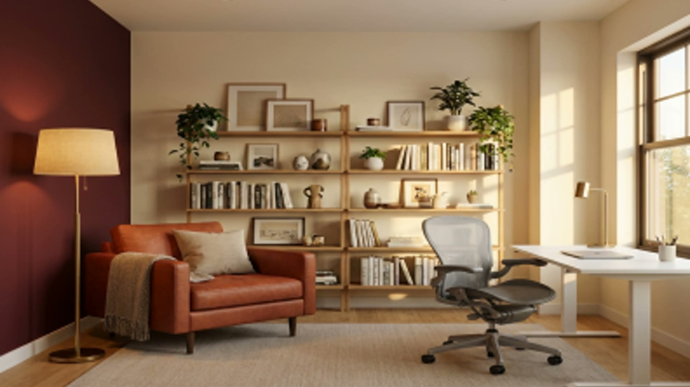

Three works about what we try to keep.
A memory that rewrites itself, a stitched heart beginning to unravel, and a room built to hold a life. Each was made with AI and decided by hand.
Works
Three projects from the semester, refined for the final. Hover a work for its title; open it for the process behind it.

Prove You Remember Final project
2026Playable browser game · four stages · final cut

Mess It Up
2026AI image-making · art direction · typography

Personal Studio
2026AI reference · Blender render · spatial system

Game proposal
OctResearch, concept sketch, branching plan

Play the final cut
↗Opens the game directly

Course studies
→What each week taught, and where it shows
Index
Every piece of work from the course, in one place. Linked rows open a project page.
| No. | Work | When |
|---|---|---|
| 01 | Prove You Remember — final cut | Oct–Dec |
| 01a | Prove You Remember — proposal | Wk 8 |
| 02 | Mess It Up | Wk 6 |
| 03 | Personal Studio | Wk 4 |
| 04 | This portfolio | Wk 7 → final |
| S1 | Rules, code and emergence | Wk 1 |
| S2 | Where does creative agency reside? | Wk 2 |
| S3 | A designer, a model, a moment | Wk 3 |
| S4 | Build your own custom skill | Wk 5 |
I treat AI as a material that needs a brief, a measurement, and an audit—never as a shortcut around a decision.
Across the semester the same lesson kept returning: a model does exactly what a vague instruction allows, so the design work is in making intentions specific enough to check. The album cover only worked once its mood became measurements. The studio held together once its colours became numbers. The game goes one step further and makes the checking itself the experience—asking players to notice what a confident system quietly changed.